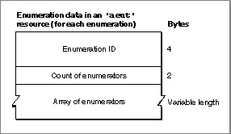
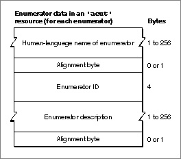

Enumeration and Enumerator Data
Each item in the array of enumerations for a suite includes information about a single enumeration and an array of enumerators for that enumeration.Figure 8-10 shows the format of the enumeration data in an
'aeut'or'aete'resource.Figure 8-10 Structure of enumeration data in an
'aeut'or'aete'resource
The data for each enumeration consists of the following items:
Figure 8-11 shows the format of the enumerator data.
- a four-character enumeration ID
- a count of constants, known as enumerators, that specify the allowable values for the enumeration, and an array of enumerators
Figure 8-11 Structure of enumerator data in an
'aeut'or'aete'resource
The data for each enumerator consists of the following items:
"Extending the Standard Suites," which begins on page 8-21, includes sample Rez input for an
- The human-language name of the enumerator. This is a Pascal string that can include any characters, including uppercase and lowercase letters and spaces. When the resource description is compiled, the resource compiler pads the string and aligns the next field on a word boundary.
If the
'aete'resource specifies the name of an enumerator as an empty string, the scripting component looks up, in its'aeut'resource, the enumerator name and other enumerator data that correspond to the specified enumerator ID. If the'aete'resource specifies a name other than the name provided by the'aeut'resource for the same enumerator ID, the scripting component uses the new name with the same enumerator data from the'aeut'resource. You should specify an empty string for the name of any standard enumerator that you list explicitly in an'aete'resource.- The four-character enumerator ID for the enumerator. If the
'aete'resource specifies a standard enumerator name and an enumerator ID other than the enumerator ID for the equivalent standard enumerator, the scripting component uses the new enumerator ID with the standard enumerator data for the specified name. You should specify the standard enumerator ID for any standard enumerator that you list explicitly in an'aete'resource.- A human-language description of the enumerator. This is a Pascal string that can include any characters. When the resource description is compiled, the resource compiler pads the string and aligns the next field on a word boundary.
'aete'resource that specifies an enumeration and an array of enumerators.